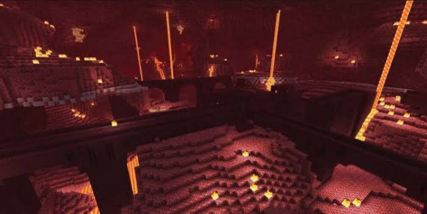
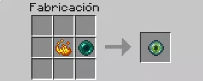
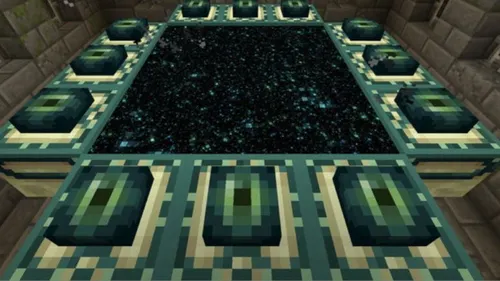
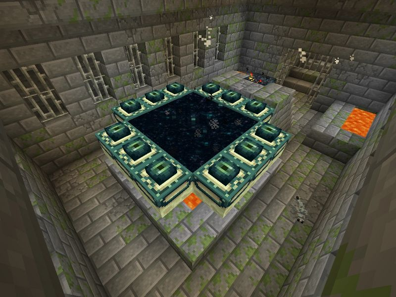

Guía Definitiva de Minecraft
Aprende todo lo necesario para sobrevivir y prosperar en el mundo de Minecraft.
Más allá de los pasos "estrictos", te daremos una pequeña guía de la forma "óptima" de conseguirlo, indicando en todo momento si es obligatorio u opcional.
• Nada más empezar el juego, busca un bioma en el que haya bastantes árboles y ponte a talar a puñetazos. En cuanto tengas la suficiente madera, créate un hacha y un pico. (OBLIGATORIO) • Con el hacha y el pico de madera consigue algo más de madera para tener palos y usa el pico para conseguir piedra. Crea picos y herramientas de piedra. (OBLIGATORIO) • Crea una mina y baja hasta alcanzar la capa 12. En esta capa deberías encontrar hierro y diamante. Recuerda que SOLO puedes conseguir el diamante con un pico de hierro, así que crea un horno y refina el hierro. (OBLIGATORIO). • Cuando consigas un pico de diamante, hazte con obsidiana. Vas a necesitar un total de 10 como mínimo, pero hazte con algo más por si las moscas. (OBLIGATORIO) • Crea un portal hacia el Nether (parte superior e inferior de dos bloques de obsidiana, a los lados 3 bloques). Usa cualquier material sobrante para las esquinas. Enciende el portal con un mechero. (OBLIGATORIO)
• En el Nether vas a tener que buscar dos cosas: el bioma de los Enderman (el Bosque Distorsionado, de color azul) y una fortaleza de Withers. (OBLIGATORIO) • Llévate una barca para matar fácilmente a los Enderman: ponla a su lado, empújale suavamente sin pegarle y una vez se suba mátalo a placer. El objetivo será conseguir perlas de Enderman (con un stack/stack y medio debería bastar). (OBLIGATORIO) • En la fortaleza tendrás que matar a los Blaze (los elementales de fuego). Coloca líneas de bloque a 3 de altura por si te encuentras muchos Withers en el pasillo: no podrán pasar y los podrás matar a placer. Cuando hayas conseguido unas cuantas varas de Blaze, sal del Nether. (OBLIGATORIO) • En una mesa de crafteo, crea los ojos de Enderman (con polvo de Blaze y perlas de Enderman). (OBLIGATORIO)
• Crea un buen puñado de estos ojos y sal al exterior. Usa click derecho para lanzar este objeto, que te indicará la dirección a la que está el portal hacia el End (se eleva por los aires y luego se rompe/se cae al suelo). (OBLIGATORIO) • Tras el primer lanzamiento, avanza un rato en la dirección marcada y vuelve a usar un ojo. Repite este proceso hasta que te marque una zona más o menos concreta. (OBLIGATORIO) • Una vez sepas la zona, va a tocar picar hacia abajo. Explora hasta encontrar el portal, que puede tener varios ojos ya incrustados o ninguno. (OBLIGATORIO)
• Rellena el portal de ojos de Ender. Antes de ir a por el dragón, asegúrate de tener un arco con flechas, bloques de construcción, una buena espada y un cubo de agua. (OBLIGATORIO) • Cuando lo tengas todo, ve al portal. Para matar al dragón vas a tener que destruir las balizas sobre las torres. Puedes hacerlo usando el arco para romper dichas balizas o subiendo con los bloques por uno de los extremos hasta llegar a dicha baliza. Usa el cubo de agua para bajar rápidamente si te decides por el método de los bloques. (OBLIGATORIO) • Cuando hayas destruido todas las balizas, usa tu arco para hacer daño al dragón. También podrás darle con la espada de vez en cuando, pues baja al suelo, pero hazlo con cuidado. Ojito con su rayo, que te puede empujar fuera de la plataforma y matarte en un abrir y cerrar de ojos. (OBLIGATORIO) • Una vez no le quede salud, el portal en el centro del mapa se activará. Pasa por él. Enhorabuena, has terminado Minecraft. (OBLIGATORIO)
